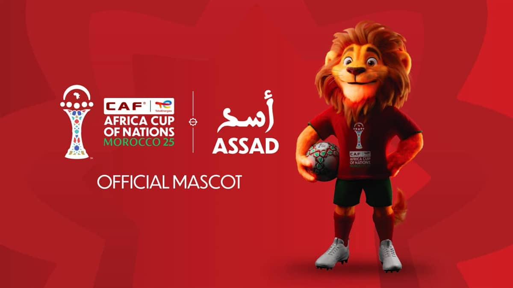

CAN Maroc 2025

Assad est un jeune lion inspiré du Lion de l’Atlas, symbole fort du Maroc et de son équipe nationale. Il porte un nom arabe signifiant « lion » et incarne la force, la fierté et l’authenticité culturelle de la CAN Maroc 2025.
Origine du nom
« Assad » vient de l’arabe et signifie « lion », en référence directe au Lion de l’Atlas, emblème du Maroc.
Symbolique
Il symbolise la fierté africaine, l’unité, la passion du football et l’énergie de la jeunesse à travers tout le continent.
Rôle pendant la CAN
Présent dans les stades, fan zones et évènements communautaires, Assad anime les supporters et crée un lien émotionnel durable avec les familles et les enfants.